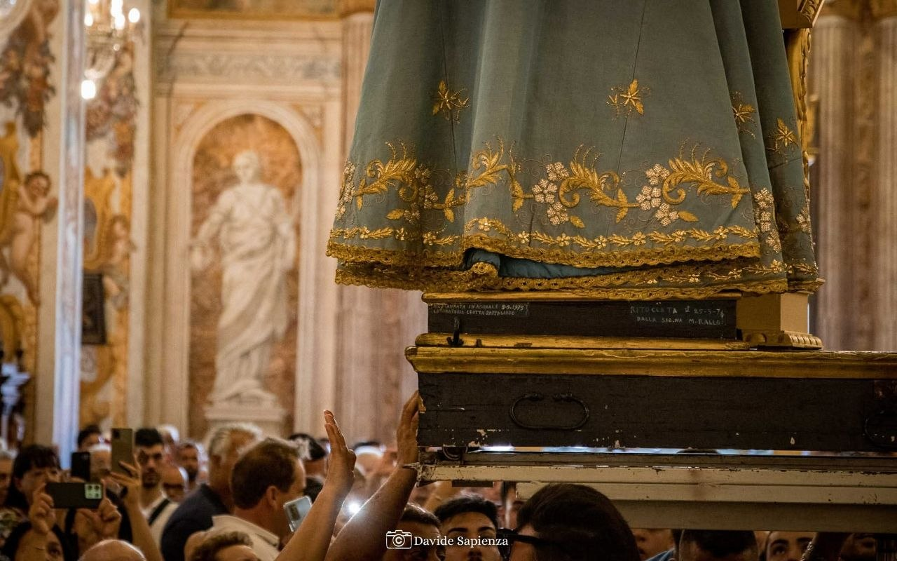

Preghiere e Canti
Le parole e le melodie che da secoli accompagnano la comunità di Pedara nell'omaggio filiale a Maria SS. Annunziata, raccogliendo la fede di generazioni passate e presenti.
[INSERIRE QUI IL TESTO DELL'ATTO DI AFFIDAMENTO]
V. Nel Nome del Padre, del Figlio e dello Spirito Santo.
R. Amen.
V. O Dio Vieni a salvarmi.
R. Signore, vieni presto in mio aiuto.
V. Gloria al Padre al Figlio ed allo Spirito Santo
R. Come era nel Principio Ora e Sempre nei secoli dei secoli. Amen.
1. Santissima Annunziata
Maria nostra Avvocata
per te nostre preghiere in tutte l'ore
fa che accetti Gesù nostro Signore.
Ave o Maria, Gloria.
2. Santissima Annunziata
Maria nostra Avvocata
hai tanto pietoso il cuore
che non sdegni il peccatore.
Ave o Maria, Gloria.
3. Santissima Annunziata
Maria nostra Avvocata
libera noi devoti
d'ogni male e terremoti.
Ave o Maria, Gloria.
4. Santissima Annunziata
Maria nostra Avvocata
per la tua clemenza e carità
consola noi in necessità.
Ave o Maria, Gloria.
5. Santissima Annunziata
Maria nostra Avvocata
fà che Cristo da te nato
ci preservi dal peccato.
Ave o Maria, Gloria.
6. Santissima Annunziata
Maria nostra Avvocata
fà che Gesù per sua grazia
l'alma ognor ci renda sazia.
Ave o Maria, Gloria.
7. Santissima Annunziata
Maria nostra Avvocata
fa che sia la nostra sorte
far felice e santa morte.
Ave o Maria, Gloria.
8. Santissima Annunziata
Maria nostra Avvocata
Madre sei del verbo eterno
facci fuori dall'inferno.
Ave o Maria, Gloria.
9. Santissima Annunziata
Maria nostra Avvocata
facci degni del tuo viso
e goderti in Paradiso.
Ave o Maria, Gloria.
OFFERTA (in piedi)
O Maria Vergine Santissima Madre di Dio, Regina del cielo e della terra, Avvocata Dei peccatori e rifugio dei tribolati, noi, benché indegnissimi di essere vostri servi, mossi nondimeno dal desiderio di servirvi, e confidando nella vostra bontà, vi scegliamo oggi, in presenza dell'Angelo nostro e di tutta la corte del Cielo, per nostra particolare Signora Avvocata e Madre e fermamente poniamo di volervi sempre servire e fare quanto si può affinché siate dagli altri servita.
Ti supplichiamo, dunque, Madre pietosissima, per il sangue del vostro figlio Gesù Cristo sparso per noi, che ci riceviate nel numero degli altri vostri devoti perché vostri perpetui servi. Favoriteci in tutte le nostre azioni ed impetrateci Grazia dal figlio vostro Gesù che talmente ci Portiamo in tutti i nostri pensieri, parole ed opere Che noi non abbiamo ad offendere gli occhi vostri e del vostro Santissimo Figlio e ricordatevi di noi ora e nell'ora della nostra morte, affinché l'anima nostra non si parta da questo miserabile corpo senza la vera e finale penitenza delle proprie colpe. Così sia.
V. Prega per noi Santa Madre di Dio.
R. Affinché siamo fatti degni delle Promesse di Cristo.
V. Preghiamo. O Padre, Tu hai voluto che il Tuo Verbo si facesse uomo nel grembo della Vergine Maria: concedi a noi, che adoriamo il mistero del redentore, vero Dio e Vero Uomo, di essere partecipi della Sua vita immortale. Per il Nostro Signore Gesù Cristo, Tuo Figlio che è Dio…
R. Amen.
V. Il Signore ci benedica, ci preservi da ogni male e ci conduca alla vita eterna.
R. Amen.
Misteri gaudiosi (o della gioia)
(lunedì e sabato)
- Annunciazione dell'Angelo a Maria.
- Visita di Maria a S. Elisabetta.
- Gesù nasce a Betlemme.
- Presentazione di Gesù al Tempio.
- Ritrovamento di Gesù nel Tempio.
Misteri dolorosi (o del dolore)
(martedì e venerdì)
- L'agonia di Gesù nell'orto degli ulivi
- La flagellazione di Gesù alla colonna
- L'incoronazione di spine
- Gesù è caricato della Croce
- La crocifissione e la morte di Gesù
Misteri gloriosi (o della gloria)
(mercoledì e la domenica)
- La resurrezione di Gesù
- L'ascensione di Gesù al Cielo
- La discesa dello Spirito Santo nel Cenacolo
- L'assunzione di Maria Vergine al Cielo
- L'incoronazione di Maria Vergine
Misteri luminosi (o della luce)
(giovedì)
- Il battesimo di Gesù nel fiume Giordano
- Le nozze di Cana
- L'annuncio del Regno di Dio
- La trasfigurazione di Gesù sul monte Tabor
- L'istituzione dell'Eucaristia
Latino
Kyrie, eleison
Christe, eleison
Kyrie, eleison
Sancta Maria, Ora pro nobis
Sancta Dei Genetrix
Sancta Virgo virginum
Mater Christi
Mater Ecclesiae
Mater divinae gratiae
Mater purissima
Mater castissima
Mater inviolata
Mater intemerata
Mater amabilis
Mater admirabilis
Mater boni consilii
Mater Creatoris
Mater Salvatoris
Virgo prudentissima
Virgo veneranda
Virgo praedicanda
Virgo potens
Virgo clemens
Virgo fidelis
Speculum iustitiae
Sedes Sapientiae
Causa nostrae laetitiae
Vas spirituale
Vas honorabile
Vas insigne devotionis
Rosa mystica
Turris davidica
Turris eburnea
Domus aurea
Foederis arca
Janua caeli
Stella matutina
Salus infirmorum
Refugium peccatorum
Consolatrix afflictorum
Auxilium christianorum
Regina angelorum
Regina patriarcharum
Regina prophetarum
Regina Apostolorum
Regina martyrum
Regina confessorum
Regina virginum
Regina sanctorum omnium
Regina sine labe originali concepta
Regina in caelum assumpta
Regina sacratissimi rosarii
Regina Pacis
Agnus Dei, qui tollis peccata mundi:
parce nobis, Domine
exaudi nos, Domine
miserere nobis
Italiano
Signore, pietà
Cristo, pietà
Signore, pietà
Santa Maria, Prega per noi
Santa Madre di Dio
Santa Vergine delle vergini
Madre di Cristo
Madre della Chiesa
Madre della divina grazia
Madre purissima
Madre castissima
Madre sempre vergine
Madre immacolata
Madre degna d'amore
Madre ammirabile
Madre del buon consiglio
Madre del Creatore
Madre del Salvatore
Vergine prudente
Vergine degna di onore
Vergine degna di lode
Vergine potente
Vergine clemente
Vergine fedele
Specchio di perfezione
Sede della Sapienza
Fonte della nostra gioia
Tempio dello Spirito Santo
Dimora dell'eterna gloria
Dimora consacrata a Dio
Rosa mistica
Torre della santa città di Davide
Fortezza inespugnabile
Santuario della divina presenza
Arca dell'alleanza
Porta del cielo
Stella del Mattino
Salute degli infermi
Rifugio dei peccatori
Consolatrice degli afflitti
Aiuto dei cristiani
Regina degli angeli
Regina dei patriarchi
Regina dei profeti
Regina degli Apostoli
Regina dei martiri
Regina dei confessori della fede
Regina delle vergini
Regina di tutti i santi
Regina concepita senza peccato
Regina assunta in cielo
Regina del Santo rosario
Regina della Pace
perdonaci, Signore
ascoltaci, Signore
abbi pietà di noi
V. Prega per noi Santa Madre di Dio
R. Affinché siamo fatti degni delle promesse di Cristo.
V. Preghiamo. O Dio, il tuo unico Figlio ci ha procurato i beni della salvezza eterna con la sua vita, morte e risurrezione: a noi che, con il santissimo rosario della Beata Vergine Maria, abbiamo meditato questi misteri, concedi di imitare ciò che essi contengono e di raggiungere ciò che essi promettono. Per Cristo nostro Signore.
R. Amen.
V. L'angelo del Signore portò l'annuncio a Maria,
R. ed Ella concepì per opera dello Spirito Santo.
Ave, o Maria.
V. "Ecco sono la serva del Signore."
R. "Avvenga in me secondo la tua parola."
Ave, o Maria.
V. E il verbo si fece carne.
R. E venne ad abitare in mezzo a noi.
Ave, o Maria.
V. Prega per noi santa madre di Dio.
R. Affinché siamo fatti degni delle promesse di Cristo.
V. Preghiamo: Infondi nel nostro spirito la tua grazia, o Padre, tu che, all'annuncio dell'Angelo, ci hai rivelato l'incarnazione del tuo Figlio, per la sua passione e la sua croce guidaci alla gloria della risurrezione. Per Cristo nostro Signore.
R. Amen.
Gloria al Padre (3v.)
L'eterno riposo...
Angelo di Dio...
MIRA IL TUO POPOLO
Mira il tuo popolo, o bella Signora,
che pien di giubilo oggi t'onora.
Anch'io festevole corro a' tuoi piè:
o Santa Vergine, prega per me!
Il pietosissimo tuo dolce cuore
e' pio rifugio al peccatore.
tesori e grazie racchiude in sé;
o Santa Vergine, prega per me!
In questa misera valle infelice
tutti t'invocano soccorritrice.
Questo bel titolo conviene a te;
o Santa Vergine, prega per me!
ANDRÒ A VEDERLA UN DÌ
Andrò a vederla un dì,
in cielo patria mia,
andrò a veder Maria,
mia gioia e mio amor.
Rit. Al cielo, al cielo, al ciel!
Andrò a vederla un dì. (bis)
Andrò a vederla un dì,
il grido di speranza,
che infondemi costanza
nel viaggio e fra i dolor.
Rit. Al cielo, al cielo, al ciel!
Andrò a vederla un dì. (bis)
NOME DOLCISSIMO
Nome dolcissimo, nome d'amore,
tu dei rifugio al peccatore:
fra i cori angelici e l'armonia
Ave Maria, Ave Maria. (2 volte)
Del Tuo popolo tu sei l'onore
poiché sei Madre del Salvatore
tra i cori angelici e l'armonia
Ave Maria, Ave Maria. (2 volte)
Soave al cuore è il tuo sorriso,
o Santa Vergine, del Paradiso:
la terra e il cielo a te s'inchina
Ave Maria, Ave Maria. (2 volte)
Dal Ciel benigna, riguarda a noi,
materna mostrati ai figli tuoi,
ascolta, o Vergine, la prece pia
Ave Maria, Ave Maria. (2 volte)
VOGLIO CHIAMAR MARIA
Voglio chiamar Maria
Se spunta in ciel l'aurora,
Voglio chiamarla ognora
Quando tramonta il dì.
Dolcissima Maria,
La madre mia Tu sei,
Perciò su i labbri miei
Sempre il tuo nome avrò.
DELL' AURORA TU SORGI PIÙ BELLA
Dall'aurora Tu sorgi più bella,
coi tuoi raggi fai lieta la terra,
e fra gli astri che il cielo rinserra,
non v'è stella più bella di Te.
Rit. Bella tu sei qual sole,
bianca più della luna;
e le stelle più belle
non son belle al par di Te. (bis)
T'incorono dodici stelle,
ai tuoi piedi hai l'ali del vento,
e la luna si curva d'argento;
il tuo manto ha il colore del ciel. (Rit.)
Gli occhi tuoi son più belli del mare,
la tua fronte ha il colore del giglio,
le tue gote baciate dal Figlio
son due rose e le labbra son fior. (Rit.)
O BELLA MIA SPERANZA
O bella mia speranza, dolcissima Maria
Tu sei la vita mia, la pace mia sei tu.
Tu sei la vita mia, la pace mia sei tu.
RIT. EVVIVA Maria, Maria sempre viva
EVVIVA Maria e chi la creò
e senza Maria, salvari non si può.
In questo mar del mondo, tu sei l'amica stella,
Tu sei la navicella, dell'alma mia sei tu.
Tu sei la navicella, dell'alma mia sei tu.
RIT. EVVIVA Maria, Maria sempre viva...
O Vergine bella, o Vergine cara,
proteggi PEDARA, che sempre ti amò.
proteggi PEDARA, che sempre ti amò.
RIT. EVVIVA Maria, Maria sempre viva...
Maria ti salutiamo, Regina Gloriosa,
Maria Madre amorosa, sei piena di bontà.
Maria Madre amorosa, sei piena di bontà.
RIT. EVVIVA Maria, Maria sempre viva...

(Clicca per aprire il video su YouTube)